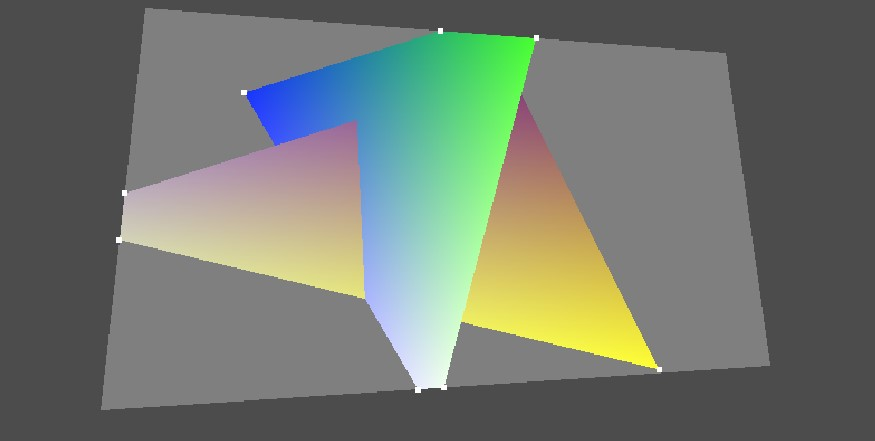
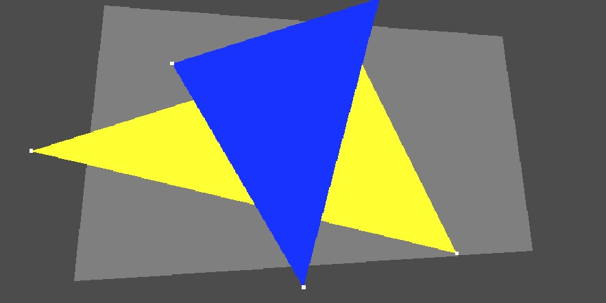
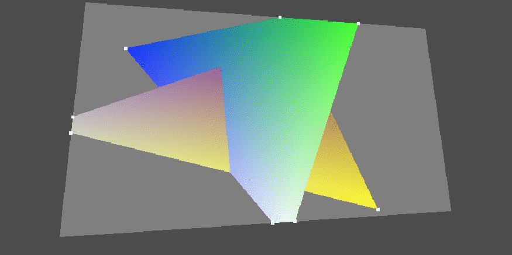

This work was done as part of a Computer Graphics course, also check out my work on Ray Tracing and Path Tracing.

Rasterization is the most common method used for video games. It is the most efficient way of rendering a 3D scene to a screen.
However it doesn't follow approximates physics of light like ray tracing does.
The rasterization pipeline will usually contain the following steps, which were implemented in this project:
The rasterization pipeline will usually contain the following steps, which were implemented in this project:
- Projection: Convert coordinates from World Space to Camera Space to Screen Space (Transformation Matrices).
- Clipping: Remove points outside of the frustrum and generate new geometry (Sutherland-Hodgman Algorithm).
- Culling: Do not render faces that face away from the camera.
- Rasterization: determine the color of each pixel (Half-space testing).
- z-Buffering: determine if the face is occluded by an object in front of it (z-buffering).
- Shading: determine the color of the triangles (Barycentric Coordinates).

Figure 2: Rasterized scene without clipping, z-Buffering and shading.
Figure 2 shows an intermediary step where only the projection, culling and rasterization were implemented.
Clipping enables optimization, but the triangle's geometry is modified to fit the boundary using the Sutherland-Hogman Algorithm.
The algorithm checks if an edge is inside, outside, entering or leaving the frustrum, and adds a vertex accordingly.

Figure 3: Rasterized scene demonstrating culling.
Figure 3 demonstrates culling. Back faces are determined by the order of the vertices. Faces with anticlockwise orders
are not rendered.